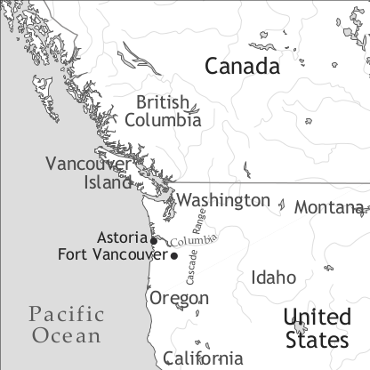

by Anthony P. Grant

Chinuk Wawa is one name, the autoglossonym, for a macaronic pidgin, based on the lexicon of Shoalwater and Clatsop Chinook, the Lower Chinook varieties (see below), which was and is generally known in English as Chinook Jargon, or simply (especially to its speakers) as Jargon. (The term Chinook Pidgin used in Winford (2003) has not really caught on, and the language is still more frequently known as Chinook Jargon than as Chinuk Wawa.)
The region where Chinuk Wawa was used comprises at least most of Washington State (especially the area west of the Cascade Mountains), western parts of Oregon and of southern British Columbia, and later (and less densely) also the British Columbian coast as far as southeastern Alaska, eastern Oregon, northern and western parts of Idaho and western Montana, and the northernmost tier of western counties in California. There was a considerable amount of dialectal variation in terms of the use of words of local origin (for instance some items of Interior Salishan origin in Chinuk Wawa varieties in inner British Columbia) which were not understood much further afield, although most primary textual and lexical material on Chinuk Wawa seems to represent structurally and lexically very similar varieties. The major exception to this principle is the material from some (but by no means all) speakers of Chinuk Wawa from Grand Ronde Reservation, Polk and Yamhill Counties, Oregon in the early 20th century (which was further documented in situ by Yvonne Hajda and Henry Zenk from the 1970s, and which is being revived there as a heritage language in 2008 as a result of tribal efforts). This shows some lexical differences and a slightly more complex grammatical structure than does material from other areas, in addition to using a more complex phonology than many (but not all) other speakers acquired (see §16).
The primary component in Chinuk Wawa is lexical material taken from the Clatsop and Shoalwater varieties of the now extinct Coastal Chinook language, which was the language of the pre-contact group who held most sway in the area and who had enslaved members of many surrounding tribes, which also paid them tribute. Coastal Chinook was spoken at the mouth of the Columbia River between the present-day states of Washington and Oregon. It also contains small numbers of loans from languages with which speakers of Coastal Chinook were in contact in pre-Euroamerican times (Tsamosan Salishan languages, Sahaptin varieties, Northern Kalapuyan). Yet a numerically small but basic and historically crucial element of Chinuk Wawa derives from the Nuuchahnulth (or Nootka) language of Vancouver Island, British Columbia, a Southern Wakashan language (the significance of this is discussed in Thomason 1983).
Other non-pidginized Chinookan varieties (Kathlamet, Multnomah, Clackamas, Wasco-Wishram) were spoken further east along the Columbia River in eastern Washington and northeastern Oregon; only Wasco-Wishram (which with Clackamas is sometimes referred to as Kiksht) still has a handful of speakers. The locus of origin of Chinuk Wawa as presently understood is the area round such early White settlements as Astoria and Fort Vancouver, both of them in Oregon.
The first material on Chinuk Wawa which can be shown to be clearly Chinuk Wawa, rather than being material in a Nuuchahnulth-based pidgin some elements of which found their way into Chinuk Wawa, was a manuscript discovered by Henry Zenk in 2003; still unpublished though discussed in Lang (2009), it is referred to as “Ms. 195”, dates from around 1824, relates to the Chinuk Wawa from Astoria, and contains about 175 words and phrases practically all of which can be traced in the bigger later Chinuk Wawa sources, and which represent all the major strata (though least of all French). Hale (1846: 635-650) provides the first scientific description of Chinuk Wawa, based on Hale’s own work on the Chinuk Wawa of Fort Vancouver in 1840-1841, and Hale (1890) doubled the Chinuk Wawa glossary which Hale (1846) provided. Gibbs (1863) is inspired by Hale’s early work but documents Puget Sound Chinuk Wawa of the time; this dictionary of about 500 entries was unabashedly plagiarized over the following several decades, with the result that most of the 100+ different dictionaries of Chinuk Wawa comprise the elements from Gibbs (1863), often adding typos or other mistakes of their own. Demers, Blanchet and St-Onge (1871), assembled by three French Catholic missionaries based at Fort Vancouver, is another early source, surprisingly accurate for its time in terms of transcription. Eells (1894) is an informative general account with data on the variety of Puget Sound.
A considerable amount of material has been produced on and in Chinuk Wawa, including songs, stories, translations, personal letters and other texts, a newspaper (Kamloops Wawa), published by the Oblate Fathers at Kamloops, British Columbia, using Duployan shorthand from the 1890s to the 1920s; this is discussed in Vržić (1999), and dozens of glossaries, many of which are at best lightly modified versions of earlier published glossaries (Johnson (1978) presents extensive material on these glossaries, examining over a hundred of them and finding eight major sources, from which most of the others were plagiarized, and some unique collections.). However, a comprehensive dictionary of Chinuk Wawa drawing upon all available sources from all areas does not exist, though Johnson’s 1978 PhD dissertation (which provides literary sources and etymologies for the hundreds of forms listed) comes close to this ideal, and Powell (1990) is also informative.
Thomason (1983) discusses the history of Chinuk Wawa, with a dissenting view on the origins of the language presented in Samarin (1986). Grant (1996a, b) discusses the features and history of Chinuk Wawa. Grand Ronde Chinuk Wawa (GRCW) data collected in fieldwork by Melville Jacobs dating from the 1920s are documented in the texts of Jacobs (1936), and its grammar is discussed in Jacobs (1932), which also discusses and distinguishes features of Chinuk Wawa in structurally less complex materials which were not collected from speakers living at Grand Ronde1, and includes a short GRCW text from Clackamas-speaker Mrs Victoria Howard (Jacobs 1932: 45-50, subsequently published in Jacobs 1936: 1-4). More modern GRCW is documented in the dictionary by Zenk and Johnson (2003), which includes sample sentences for many forms, and which draws upon earlier sources for GRCW, including Jacobs’ material, indicating a number of cases where a form recorded by earlier visitors to Grand Ronde were no longer known to later GRCW speakers. A revised version appears in 2013. Grant (1996a) draws on work by Henry Zenk, especially Zenk (1984), and discusses features of grammaticalization in GRCW.
Boas (1933), erroneously in retrospect, expresses scepticism about some of the structural features listed in Jacobs’ GRCW work, and provides useful lexical information of his own collection, together with a Chinuk Wawa myth text which Boas obtained from a Tsimshian speaker. Hale (1890) and Gibbs (1863) are the major dictionaries of Chinuk Wawa that are based on primary material which they collected. The book by Le Jeune (1924) represents Chinuk Wawa in Roman transcription and in shorthand; the variety it documents is that of southern British Columbia in the first part of the 20th century, which contained some local words of Interior Salishan origin and which had also replaced many long-established Chinuk Wawa words of Native and French origin with recent loans from English.
Chinuk Wawa was used as a lingua franca between people of different linguistic and ethnic backgrounds (many of them Native American, but also speakers of English, French, Spanish, Cape Verdean Creole, Chinese, Hawaiian and others) for a startlingly wide variety of purposes from at least the early 19th century until the first part of the 20th century, when its role was slowly eclipsed by that of English. At its height it may have been known by 100,000 people including speakers of several dozen Native languages. Nonetheless, even in the period of its decline a knowledge of Chinuk Wawa as a joking language and as an in-group language and marker of identity and solidarity persisted among many people, not least those of Native American heritage, for several decades, and inherited knowledge of it (rather than book-based knowledge) persisted into the 1990s at Grand Ronde (see below) and at the nearby Siletz Reservation, also in northern Oregon.
Chinuk Wawa has provided regional English (and sometimes metropolitan English) with a few words, such as potlatch ‘tribal gathering’ (< Chinuk Wawa páłač ‘give’, from Nuuchahnulth2). Dozens of words from Chinuk Wawa, including many elements of European origin, have passed into one or more Native languages of the area as items of acculturational vocabulary. Terms of Chinuk Wawa origin are sometimes used as names for stores, business ventures, etc., in the modern Pacific Northwest as a means of flashing up a sense of regional identity; indeed the Washington State motto is Al-Ki, Chinuk Wawa ałqi ‘soon, later’. Chinuk Wawa has long been a topic of interest for people interested in the history of Indian-White relations in the Northwest (Chinuk Wawa having been the language in which many treaties were concluded).
As previously stated, Chinuk Wawa has for some time been one of the markers of a specifically Pacific Northwest ethos and sense of regional “cool” (and not only among people of Native American heritage); names taken from Chinuk Wawa (such as łaxauya, often spelt Klahowya ‘welcome’) are used to name stores and other businesses, for example. A few words from Chinuk Wawa have become widely used in regional English and sometimes beyond. Most writing in Chinuk Wawa has been religious, variously Catholic and Protestant prayers, hymns, and Biblical translations, though Jacobs’ (1936) myth text collection and Boas’ 1888 collection of songs are important as examples of Chinuk Wawa being used in creative forms by Native Americans (and the analysis of a story by the Samish Coast Salish Chinuk Wawa-speaker Thomas Paul in Hymes (1990) shows that such forms often exhibited the same kind of narrative structure as myths in local Native languages). Nowadays the language has a strong presence on the web, especially through The Chinook List maintained by David D. Robertson, an archived list which contains links to a very wide range of sources and materials on the language.
The origin of Chinuk Wawa, and especially the question of whether it preceded or followed the irruption of Euroamericans into the Pacific Northwest at the turn of the 18th century is still in dispute. As previously suggested, there may have been a Nuuchahnulth-based pidgin in use between Nuuchanulth-speakers and Euramericans around Vancouver Island, and Thomason (1983) has pointed out on phonological grounds that the Nuuchahnulth elements in Chinuk Wawa must have been introduced by Europeans, presumably speakers of English, because this element alone among the Indian elements in Chinuk Wawa lacks the complex and un-European sounds which typify Nuuchahnulth and other Native Pacific Northwest languages, and which are found in varieties of Chinuk Wawa recorded from Native Americans and from some non-Indians. If there was originally a Chinook-based pidgin in the area before Euramerican invasion, then Thomason’s work shows that it must have been modified by interaction with Euramericans. Lang (2009) avers that the origins of Chinuk Wawa are post-Euramerican contact, and a manuscript vocabulary datable to ca. 1824 seems to bear this out. Practically all the words in this list of ca. 175 entries are recognizable from later Chinuk Wawa sources as being the later Chinuk Wawa words generally used for these concepts, and they reflect all the major sources of Chinuk Wawa vocabulary (including terms of unknown origin) with the exception of French. (French provided very many Chinuk Wawa terms for body-parts, a semantic field which is poorly represented on this list.)
Chinuk Wawa is certainly a pidgin; it has no inflection or bound morphology and Chinook inflections which happen to be attested on words of Chinook origin are construed as part of the words themselves.
The approach to Chinuk Wawa phonology here is conservative, and reflects the pronunciation used by Native Americans at Grand Ronde and certain other locations in Oregon (this was the only region where /l/ and /r/ were not merged as /l/ in all words).
The transcription used here is a modified form of that used in publications in GRCW which have been made public by Henry Zenk, for instance Zenk (1988); Zenk (1997) discusses phonological variation in the Chinuk Wawa of some Native speakers of varied linguistic backgrounds. The relatively complex segmental and canonical phonology was acquired by some non-Native American users of Chinuk Wawa (and many Native speakers too), but the majority of such speakers appear to have used a typically Pacific Northwest phonological system which did not distinguish between aspirated, unaspirated and glottalized voiceless stops, replaced uvular consonants with their velar equivalents, and realized voiceless lateral fricatives as [θl] and voiceless lateral affricatives as [tl ~ kl]. In short this system replaced any sounds which native speakers of English found difficult with sounds which they could manage to produce without undue effort. Meanwhile the vowels /e/ and /o/ are also used in this pronunciation, not least in items deriving from English, on many occasions when GRCW and other varieties used by Natives would use /i/ and /u/.
|
Table 1. Vowels |
|||
|
|
front |
central |
back |
|
open |
i |
u |
|
|
mid |
e |
ə |
o |
|
close |
a |
||
|
Table 2. Consonants |
||||||||||
|
bi-labial |
alve-olar |
pre-palatal |
pal-atal |
velar |
labio-velar |
uv-ular |
labio-uvular |
pha-ryngeal |
||
|
plosive |
voiceless |
p |
t |
ts |
k |
kw |
q |
qw |
‘ |
|
|
aspirated |
ph |
th |
tsh |
kh |
kwh |
qh |
qwh |
|||
|
glottalized |
p’ |
t’ |
ts’ |
k’ |
k’w |
q’ |
q’w |
|||
|
voiced |
b |
d |
g |
|||||||
|
nasal |
m |
n |
ŋ |
|||||||
|
trill |
(r) |
|||||||||
|
fricative |
voiceless |
(f) |
s |
ł |
š |
x |
xw |
X |
Xw |
h |
|
affricate |
voiceless |
tł |
č |
|||||||
|
voiceless aspirated |
čh |
|||||||||
|
voiceless glottalized |
tł’ |
č’ |
||||||||
|
voiced |
dž |
|||||||||
|
lateral approximant |
l |
|||||||||
|
glide |
w |
y |
||||||||
_____________________________________________________________
Aspiration of consonants does not have phonemic status, though glottalization does.
The optimal permissible Chinuk Wawa syllable structure is expressible as the formula (C)(C)V(C)(C)(C), with almost every permutation within the formula attested as a Chinuk Wawa word; Chinuk Wawa does not permit vowelless words. It does, however, exhibit a wide range of consonant clusters, including many clusters which presented difficulties for non-Native speakers of the language, such as łq’up ‘to cut’ and makwst ‘two’.
Stress on individual words in Chinuk Wawa is generally but by no means exclusively on the penultimate syllable; vowel length is used for emphasis, for example sayá ‘far’, sayáaa ‘really far away’.
As previously stated, Chinuk Wawa has no inflectional morphology. Noun class prefixes on some nouns of Chinookan origin do not operate within a noun class system in Chinuk Wawa any more (so that for instance sixwst ‘eye, eyes, face’ is either singular or plural, while in Chinookan the initial s- indicated that the noun was in dual number). The same is true of the 150+ nouns of French origin recorded for any form of Chinuk Wawa which incorporate all or part of French articles as their first syllables, such as latáb ‘table’ (< French la table ‘the table’); these syllables may originate in French articles but in Chinuk Wawa they were simply part of the word. The nouns íkta ‘what, thing, something’ and tílxam ~ tílixam ‘person’ have plural forms íktas ‘gear, property, things’ and tílxams ~ tílixams ‘people, friends’ which use the English plural -s, but no other Chinuk Wawa nouns use this ending. Contentive words in Chinuk Wawa are invariable. Nouns (and adjectives) do not change their shapes for morphological reasons; there is no indication of number or case on nouns, adjectives or pronouns. Attributive adjectives precede nouns. Chinuk Wawa has neither indefinite nor definite articles.
These are invariable and precede the noun: čxi kəním ‘new canoe’. Modifying adverbs precede the adjectives:
(1) hayú łuš
much good
‘very good’
There are no distinct comparative or superlative forms of adjectives, context being relied upon, although occasionally íləp ‘first, in front’ before an adjective can indicate superlative status:
(2) íləp skúkum
in.front strong
‘strongest’
There are several kinds of pronouns. The personal pronominal set indicates three persons, two numbers but no indication (for instance) of gender in the third person singular or plural, nor of a distinction of inclusivity versus exclusivity in the 1pl pronoun. The same forms may indicate subject, direct and indirect object, and adnominal possessor:
(3) yáka páłač máyka úptsaX khápa náyka
3sg give 2sg knife to 1sg
‘He gave me your knife’.
The forms of the personal pronouns are given in Table 3.
|
Table 3. Chinuk Wawa Personal Pronouns |
|||
|
meaning |
general |
GRCW emphatic |
GRCW unstressed |
|
1sg |
náyka |
náyka |
nay ~na |
|
2sg |
máyka |
máyka |
may ~ ma |
|
3sg |
yáka |
yáXka ~ yáka |
ya |
|
1pl |
ntsáyka |
ntsáyka |
ntsay ~ ntsa |
|
2pl |
mtsáyka |
mtsáyka |
mtsay ~ mtsa |
|
3pl |
łáska |
łáska |
łas |
In GRCW a neuter object can be expressed by Ø (Robertson 2007).
There is one demonstrative pronoun in Chinuk Wawa, namely úkuk: úkuk man ‘this man, that man’. It does not indicate proximity versus distance, or number: úkuk man ‘this man, that man, these men, those men’.
Interrogative pronouns and other interrogative words are: íkta ‘what?; something; thing’, łáksta ‘who?; someone’, qháta ‘how? why?’, qha ‘where?’, qhántsi ~ qhánči ‘how much?’ Khanawí ‘all’ is an indefinite pronoun.
Chinuk Wawa uses prepositions, simple and compound. Khápa ‘at, in, to’ is a utility preposition and can be used as the second component in complex preposition phrases:
(4) stik kíkwli khápa íli’i
tree below at earth
‘tree below earth’, also: ‘root’.
Kánamakwst ‘with, together with’ is both associative and instrumental.
Numerals in Chinuk Wawa precede the noun group and are of Chinookan origin. (1: ixt, 2: makwst, 3: lun, 4: lákit, 5: qwínəm; 6: táXəm, 7: sínamakwst, 8: stúxwtkin, 9: kwaitst, 10: táłləm; 100: ták’umunaq.)
Unlike in Lower Chinook, Chinuk Wawa verbs do not change their forms in order to indicate tense, mood, aspect, person or number. Indications of tense and aspect especially are more often than not left up to the hearer’s interpretation of the context. Tense indications can be made by the prefixing of temporal adverbs to the verb group, but this is rarely done and is rare in narrative texts; narrators rely on context instead.
Similarly the reduplicaton of a verb (which is commoner in GRCW) can indicate that the action it expresses continued repeatedly or that it lasted for a long period of time.
Full NP subjects require the use of a resumptive yáka in verb phrases:
Chinuk Wawa has no copula (though míłayt ‘to sit’ is sometimes used as a locative copula). For ‘to have’ t’uwən is used, but it is rare except in GRCW. There is no passive voice in Chinuk Wawa, although in GRCW one occasionally finds a form based on the verb ‘to come’:
(7) ya čáku-íX puy khápa íli’i
3sg come hide by earth
‘She gets covered by earth.’ (Zenk & Johnson 2003: 13)
Modal auxiliaries are poorly developed in Chinuk Wawa and rarely found in Chinuk Wawa texts; thq’iX ‘to want, love, like’ (in GRCW and many non-Indian pronunciations realized as tíki) is the closest that the language has to one:
Verb serialization as such is not used, but more than one verb can occur in a verb group. Causative verbs (and some non-causative compound verbs) are formed using mámuk ‘make, do’: líphlip ‘to boil (intransitive)’, mámuk líphlip ‘to boil (transitive)’. We may note also forms such as təpšin ‘needle’, giving rise to mámuk təpšin ‘to sew’.
The general order is subject - verb - object - adjunct.
(9) man nánič khámuks khápa stik
man see dog prep forest
‘The man sees the dog in the woods’.
The coordinating conjunction pi (< French puis) is usually translated with ‘and’, though sometimes by ‘but’.
(10) qháta ya wáwa čáku pi wik ya nánič?
why 3sg say come and not 3sg see
‘How can she say ‘come in’ yet she doesn’t see me?’
(Zenk & Johnson 2003: 44)
Parataxis is commoner than hypotaxis in Chinuk Wawa sentences. Nonetheless, Chinuk Wawa has a few subordinating conjunctions which precede their clauses. The form pus ‘if’, often anglicized to spus (cf. English suppose), is of Chinookan origin. Other conjunctions are kíwa ‘because’ and k’əsči ‘although, even though’ (neither of which occurs in our GRCW records). There is no complementizer for use in object clauses. The glossed text below provides several instances of temporal adverbial subordinate clauses.
Relative clauses are present in our data for GRCW, where the subject of the relative clause was replaced by uk:
(11) álta yáXka uk mítxwit áłqi ya wáwa
then she the stand soon 3sg talk
‘Then she - the one who’s standing - will talk.’
(Zenk & Johnson 2003: 58; sentence attributed to Victoria Howard)
The negative particles wik and hílu, largely interchangeable, usually precede the subject:
(12) Hílu/wik máyka kámtaks yáwa
not 1sg know 3sg
‘I don’t know him’.
There are a number of Chinuk Wawa words which always have a reduplicated form: kálakala ‘bird’ (there is no *kála). Sometimes reduplication produces a word with a slightly different sense: pil ‘red’, pílpil ‘blood’. In GRCW reduplicated words represent continuation and/or repetition of action in the case of verbs:
phuš versus phúš-phuš
‘push’ ‘keep pushing’ (Zenk & Johnson 2003: 45).
Wh-questions are formed with clause-initial wh-words:
(13) łáksta míłayt yakwá?
who sit here
‘Who lives here?’
Polar questions can be indicated (and can be distinguished from statements) by the use of sentence-final na.
The structure of Chinuk Wawa seems to have been very uniform throughout the regions where it was used. Considerable lexical variation (especially the incorporation of more words from English) occurred both over periods of time and from one region to another, as a result of small-scale borrowing from local languages which rarely resulted in local words becoming more widely used in other areas, but even then the everyday vocabulary of Chinuk Wawa remained rather stable throughout a huge geographical area.
There is one major exception to this tendency. The Chinuk Wawa which was used by many speakers living at Grand Ronde Reservation, northwestern Oregon, showed an increase in structural complexity (as well as a more complex segmental phonological system and an increase in words of Chinookan origin in the lexicon). It is easy to overplay the differences between GRCW and the more conventional form of the language. Differences between GRCW and ordinary Chinuk Wawa consist of the availability in GRCW of non-emphatic reduced forms of about a dozen high-frequency morphemes (many of which have been grammaticalized and given new functions, and all of which coexist in GRCW with their unreduced counterparts, though the latter often have new senses) and the addition to the lexicon of a few dozen words of Chinookan origin, many of them onomatopoeic in nature, with the addition of a smaller number of words of French, English or other origins which are not found in other Chinuk Wawa varieties. This could be regarded as a prototypical creole in McWhorter’s terms (McWhorter 1998). It meets the criteria of the McWhorter creole prototype: It lacks phonemic lexical or other tone, it has no productive morphology (though in the Grand Ronde variety of Chinuk Wawa, proclitic personal pronouns are used, as are tense-aspect markers and a causative prefix, these being absent from the usual variety of the language) and it does not use any productive non-compositional derivation. However, in terms of segmental and canonical phonology Chinuk Wawa as spoken by Indians and some non-Indians, and not just the Grand Ronde variety, is rather typical of a Pacific Northwest Coast Native American language, lacking only pharyngeals and glottalized continuants among the sets of characteristic Northwest Coast sounds. It uses a four-way stop contrast (e.g. /p – ph – p’ – b/), velar and uvular fricatives and stops, voiceless lateral fricatives and affricates, and containing words with complex CCC- and -CCC- clusters, and indeed some rare cases of ‑CCCC- clusters. It uses both /l/ and /r/, unlike most Native languages of the area.
The pronominal system of GRCW was discussed in §8. The other forms for which both short and long versions (short versions deriving from the long versions, and which though not always monosyllabic are always unstressed) contrast structurally and semantically are as follows:
uk ‘the; particle introducing relative clause’ vs. úkuk ‘this, that’
čau ~ ča ‘to become; passive marker’ vs. čáku ‘to come’
hayu ~ hai ~ ha ‘do something repeatedly’ vs. hayú ‘many, much’
łatu ‘to go and do something’ vs. łátwa ‘to go’
munk ‘to do, make’ vs. mámuk ‘to copulate’.
Chinuk Wawa is a macaronic pidgin because the elements which comprise its most basic lexicon derive from a number of different languages. Indeed, if we took the contents of the 207-item Swadesh list as its contents appear in most sources on Chinuk Wawa we would find the following proportion of components: Words deriving from Chinook would comprise 53%, Canadian French 12%, English 16%, Nuuchahnulth 14%, Coast Salishan languages 3%, Kalapuya 0.5%, Cree 0.5%, items of unknown origin 1%.
We may further note the lability of pidgin lexica from seeing the change in composition of the lexicon of Chinuk Wawa at several points in time (cf. Table 4): As Thomason (1983) indicates, Chinuk Wawa has its roots in a Nuuchahnulth-based pidgin of the late 18th and early 19th century, which presumably originated in British Columbia but which absorbed numerous lexical items from Lower Chinook, English and French when its White users went to the lower Columbia River. It was bolstered with smaller accretions from Coast Salishan languages (specifically Lower Chehalis, as in snas ‘rain’, and probably Cowlitz, as in older Chinuk Wawa łak’ísi ‘star’; both languages belong to the Tsamosan subgroup of Salishan), Sahaptin (e.g. támulič ‘barrel’), Northern Kalapuya (Willamette Valley, Oregon; e.g. tsúlu ‘to lose one’s way’) and Cree (e.g. tutúš ‘breast, milk’), the last component being introduced by Cree-speaking employees of the Hudson Bay Company. There may also be a Haida element in the language as a relic of a pre-existing Haida-English pidgin which was replaced by Chinuk Wawa and English in the course of the 19th century (hílu ‘no, not’: John Enrico, personal communication). Subsequent borrowing, largely from local Salishan languages (such as from Nisqually and other forms of Coast Salishan in Puget Sound, Washington State), occurred to a small extent in some regions and the words which were borrowed only achieved local currency. Meanwhile the semi-creolized version that was used at Grand Ronde, Oregon, and which was the major but hardly ever the only available medium of communication for a few generations of displaced Native Americans, acquired further lexicon from Chinookan languages, which had a number of speakers in the first generations of settlement at Grand Ronde, and acquired additional vocabulary from English and French. Large-scale relexification towards English took place (possibly independently in each area) in the late 19th and early 20th centuries in many areas and in most varieties of Chinuk Wawa.
|
Table 4. Etymological structure of Chinook Wawa in five eras |
|||||
|
1841 |
1865 |
1894 |
1924 |
GR |
|
|
Chinook |
111 |
221 |
198 |
169 |
235 |
|
Nuuchahnulth |
18 |
24 |
23 |
24 |
26 |
|
English |
41 |
67 |
570 |
250+ |
115 |
|
French |
34 |
94 |
158 |
87 |
84 |
|
Others incl. unknown |
48 |
79 |
138 |
17 |
155 |
In Table 4, “Others” refers to items of other origins, including onomatopoeic words, items from Salishan languages, Kalapuyan, Sahaptin, Haida, etc. and those which are of unknown origin. The five ages of Chinuk Wawa data here are from the following sources: Horatio Hale’s work on the Chinook Jargon as he heard it at Fort Vancouver, Oregon in 1841 (Hale 1846); the Gibbs material (see below), which is not entirely independent of Hale’s work; the material collected by Rev. Myron Eells at Skokomish, Puget Sound, Washington (Eells 1894); and the material collected by Père Joseph-Marie Raphael Le Jeune among Chinuk Wawa speakers near Kamloops, British Columbia, in the 1910s and 1920s and reflecting the variety used in his English and Chinuk Wawa periodical Kamloops Wawa (Le Jeune 1924).
Lastly, under “GR” I present figures from a count of the Chinuk Wawa morphemes listed in Zenk et al. (2009), drawn from the database of which Zenk & Johnson (2003) was an earlier version. This is a lexicon of the variety used at Grand Ronde Reservation, Oregon. In the GR column “Others” comprises 35 terms of Salishan origin, 10 from Kalapuyan, 3 from other Lower Columbia languages, 2 from Hawaiian, 18 forms of ambiguous or hybrid sources and 87 forms of unknown origin. The forms listed there for GR date from records of the 1870s to present day materials.
The English elements in the 1894 column show many instances both of relexification (the substitution of one morph by another) and adlexification (the addition and refining of distinctions within a pre-existing semantic field by the addition of a new morph and thereby a new meaning to Chinuk Wawa vocabulary).
The figures for Chinuk Wawa that were given for the Swadesh lists relate to the core lexicon as it was documented by George Gibbs at Puget Sound and Fort Steilacoom, Washington State, in 1863 (Gibbs 1863); relexification from Native languages (and from French) towards English and to a much lesser degree towards French occurred on such a scale in the latter periods of Chinuk Wawa’s existence as to make global figures of the proportions of each component almost meaningless. Approximate figures for forms which have been reliably recorded in at least one trustworthy source, regardless of historical period, would have Chinook elements as 22% of the entire recorded vocabulary, English as 37%, Nuuchahnulth 2.5%, French 15%, other known sources 5.5%, unetymologized forms 18%. (The problem of etymologizing much of the Chinuk Wawa vocabulary is exacerbated by the fact that no extensive or scientifically transcribed dictionary of any Chinookan language has been publicly available for consultation.)
Chinuk Wawa has interjections (for instance nawítka ‘certainly’) but no ideophones, and there are no separate items of derivational morphology.